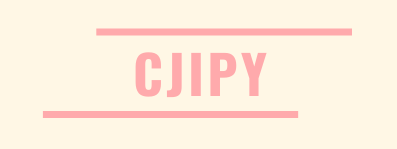
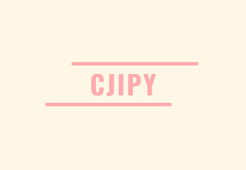

<div class="navbar-wrapper">
  <nav class="navbar navbar-default navbar-fixed-top" role="navigation">
    <div class="container">
      <div class="navbar-header page-scroll">
        <button type="button" class="navbar-toggle collapsed" data-toggle="collapse" data-target="#navbar" aria-expanded="false" aria-controls="navbar">
          <span class="sr-only">Toggle navigation</span>
          <span class="icon-bar"></span>
          <span class="icon-bar"></span>
          <span class="icon-bar"></span>
        </button>
        <a class="navbar-brand" href="#page-top" id="i18_title"></a>
      </div>
    
    
      <div id="navbar" class="navbar-collapse collapse">
        <ul class="nav navbar-nav navbar-right" id="i18_navbar">
          {% for section in site.data.products %}
          <li>
            {% if section.page %}
              <a class="page-scroll" href="{{ section.page}} ">
            {% else %}
              <a class="page-scroll" href="{{ section.id | prepend: '#'}} ">
            {% endif %}
              <span data-i18n="{{ section.i18n }}">{{ section.name }}</span>
            </a>
          </li>
          {% endfor %}
          
        </ul>
      </div>
    </div>
  </nav>
</div>
<div class="top-space"></div>

{% for section in site.data.products %}
{% assign loopindex = forloop.index | modulo: 2 %}
<section id="{{ section.id }}" class="features {{ section.css }}" style="margin-top: 0;">
  {% include {{section.tpl}} %}
</section>
{% endfor %}
<style>
iframe {
  -moz-transform: scale(0.25, 0.25);
  -webkit-transform: scale(0.25, 0.25);
  -o-transform: scale(0.25, 0.25);
  -ms-transform: scale(0.25, 0.25);
  transform: scale(0.25, 0.25);
  -moz-transform-origin: top left;
  -webkit-transform-origin: top left;
  -o-transform-origin: top left;
  -ms-transform-origin: top left;
  transform-origin: top left;
}
</style>